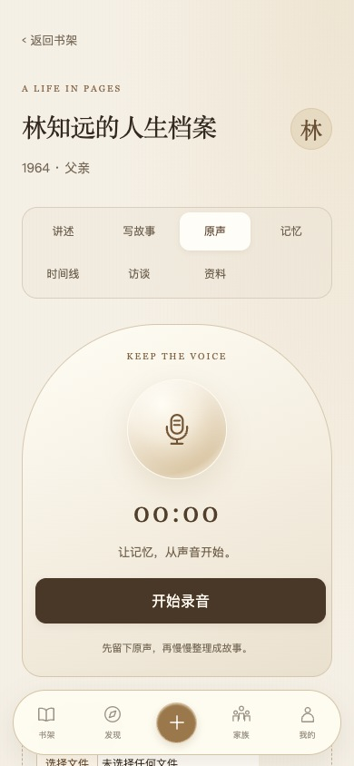
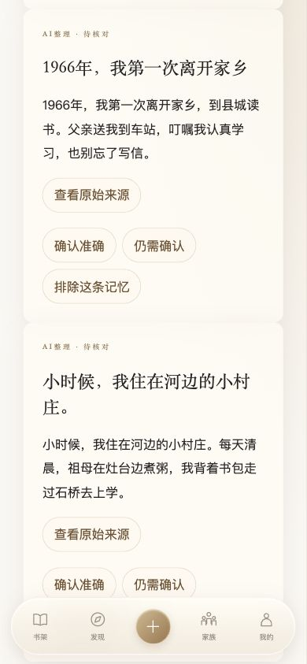
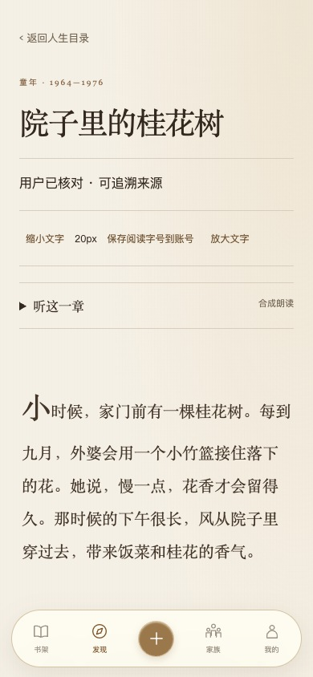
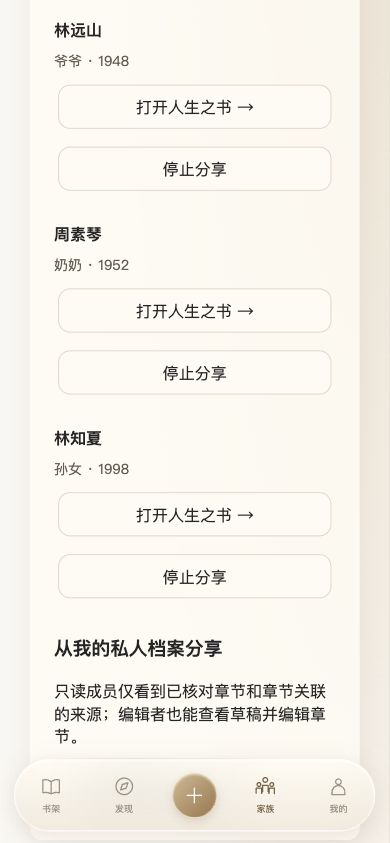

先听一个故事。
从熟悉的声音开始。
不必按时间顺序，也不必组织好语言。想起一段往事，就从那里说起。先留下原声，再慢慢整理。
EVERY LIFE, ONE PAGE AT A TIME
不必按时间顺序，也不必组织好语言。想起一段往事，就从那里说起。先留下原声，再慢慢整理。
从原始讲述里整理记忆，回到来源逐条核对。哪些确定，哪些还需要问一问，由你决定。
把经过核对的记忆编排成章节，让一个人的人生，成为一家人可以继续阅读的故事。




STORIES WORTH KEEPING
关于记录，关于记忆，也关于我们为什么出发。
BEFORE YOUR FIRST PAGE
点击“立即体验网页版”进入现有书房。打开即可浏览示例书架；云端登录与保存请使用上方评委体验账号，公开注册暂未开放。
AI 辅助转写、提问与整理。原声与讲述保留，记忆由人核对，事实由你确认。AI 服务取决于体验账号与服务可用状态。
人物档案通过登录和访问权限管理，家族分享由邀请与成员权限控制。官网截图使用示例数据，不展示真实用户的私人档案。
提供 Android v1.0.3 体验测试版，需要指定体验账号。本页展示的新版界面尚未包含在该安装包中。
页面使用新版界面的本机截图，人物、记忆与章节均为虚构演示内容。公开体验版尚未更新为这套界面，产品截图仅供预览。
找一个安静的下午，听一段熟悉的往事。
体验测试阶段 · 完整功能需要体验账号